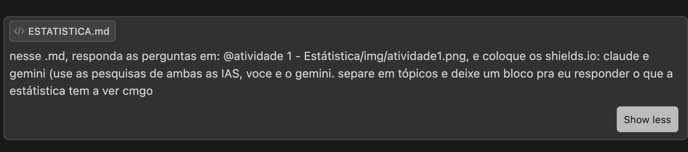
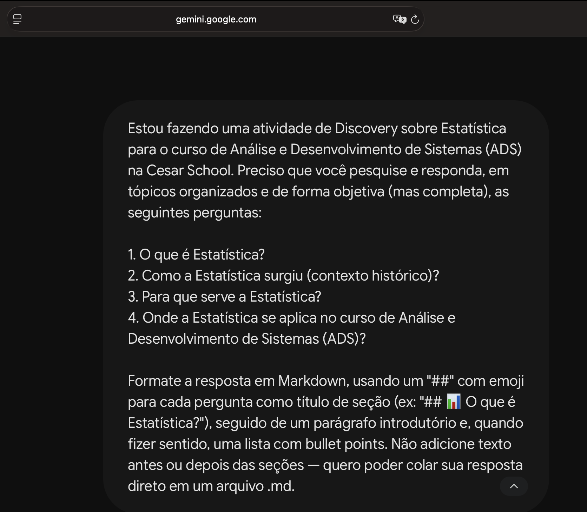

👨🏻💻 Autor deste Repositório
🏫 Instituição: Cesar School 🎓🧡
📍 Recife, Pernambuco — Brazil 🇧🇷
💻⛏️ Tecnologias e LLM's utilizadas
📝 Prompts utilizados
Claude

Gemini

📊 O que é Estatística?
Claude
Área da matemática aplicada dedicada a coletar, organizar, analisar, interpretar e apresentar dados, transformando grandes volumes de informação em conclusões confiáveis mesmo diante de incerteza.
- Descritiva: resume os dados (médias, medianas, desvio padrão, gráficos).
- Inferencial: usa amostras para tirar conclusões sobre uma população maior, com probabilidade.
Gemini
Ciência que coleta, organiza, analisa, interpreta e apresenta dados para apoiar decisões sob incerteza, transformando números brutos em informações úteis.
- Coleta e Organização: estruturação de dados brutos.
- Análise Descritiva: média, mediana, variância, desvio padrão.
- Inferência: generaliza amostras para populações, com margem de erro.
- Modelagem e Predição: modelos probabilísticos para antecipar tendências.
🔎 Comparando: ambas convergem na definição central e na divisão descritiva/inferencial; o Gemini já cita modelagem preditiva, o Claude é mais enxuto.
📜 Como surgiu a Estatística? (Contexto)
Claude
Vem do latim status (Estado): raízes ligadas a censos, recursos militares e impostos no Egito, China e Roma antigos.
- Séc. XVII: Graunt e Petty criam a "aritmética política" (registros de nascimentos/mortes).
- Séc. XVIII-XIX: Gauss, Laplace e Pascal formalizam a teoria das probabilidades.
- Séc. XX: Fisher e Pearson consolidam testes de hipótese e Estatística Inferencial.
Gemini
Raízes na Antiguidade, ligada ao termo "Estado": governantes recenseavam população e riquezas para tributação e recrutamento militar.
- Antiguidade: censos egípcios, babilônios, chineses e romanos.
- Séc. XVII: Graunt (mortalidade); Pascal e Fermat formalizam a Probabilidade.
- Séc. XVIII-XIX: Gauss cria a Distribuição Normal; Quetelet aplica às ciências sociais.
- Séc. XX: Fisher, Pearson e Neyman desenvolvem testes de hipótese e design de experimentos.
🔎 Comparando: mesmos marcos (Graunt, Pascal, Gauss, Fisher); Gemini organiza por século, Claude acrescenta Petty e Laplace.
🎯 Para que serve a Estatística?
Claude
Transforma dados em decisões:
- Decisões baseadas em evidências (negócios, saúde, políticas públicas).
- Identificação de padrões e tendências.
- Previsão de cenários (demanda, risco de crédito, comportamento de usuários).
- Validação de testes A/B e estudos clínicos.
- Base para Machine Learning e IA.
Gemini
Transforma dados em conhecimento acionável, substituindo achismo por evidências:
- Fundamentação de decisões de governos e empresas.
- Identificação de padrões, anomalias e correlações.
- Mitigação de risco (investimentos, seguros, saúde, cibersegurança).
- Validação de hipóteses científicas.
🔎 Comparando: convergem em "reduzir achismo com evidências"; Claude foca em tecnologia (A/B, ML), Gemini amplia para saúde e cibersegurança.
🎓 Onde a Estatística se aplica no meu curso? (ADS)
Claude
- Análise de sistemas: métricas de performance, uso e logs.
- Testes de software: amostras de teste, cobertura, frequência de bugs.
- Machine Learning/IA: classificação, regressão e clusterização.
- BI: relatórios, dashboards e KPIs.
- Gestão ágil: velocidade do time, burndown, previsibilidade.
- UX/Produto: testes A/B e análise de comportamento.
Gemini
- Ciência de Dados/ML: regressão, árvores de decisão, redes neurais.
- Desempenho de software: latência, throughput e taxa de erro via percentis.
- Testes A/B/UX: significância estatística entre versões.
- BI: dashboards e relatórios a partir de bancos SQL/NoSQL.
- Cibersegurança: detecção de fraudes e anomalias.
🔎 Comparando: ambas citam ML, A/B e BI; Claude inclui Gestão Ágil, Gemini traz percentis/latência e cibersegurança.
🤔 O que a Estatística tem a ver comigo?
Eu sempre achei que Estatística era só fórmula decorada e termos técnicos, mas; fazendo essa atividade: percebi que usamos isso o tempo todo sem perceber: quando olho quantos commits fiz na semana, comparo se um código ficou mais rápido, fazer uma conta/comparativo rápido. No fim é isso: parar de confiar no achismo e olhar pro que os dados realmente mostram. É algo que vou levar pro resto do curso e da vida, principalmente pra área de dados/ML que curto.